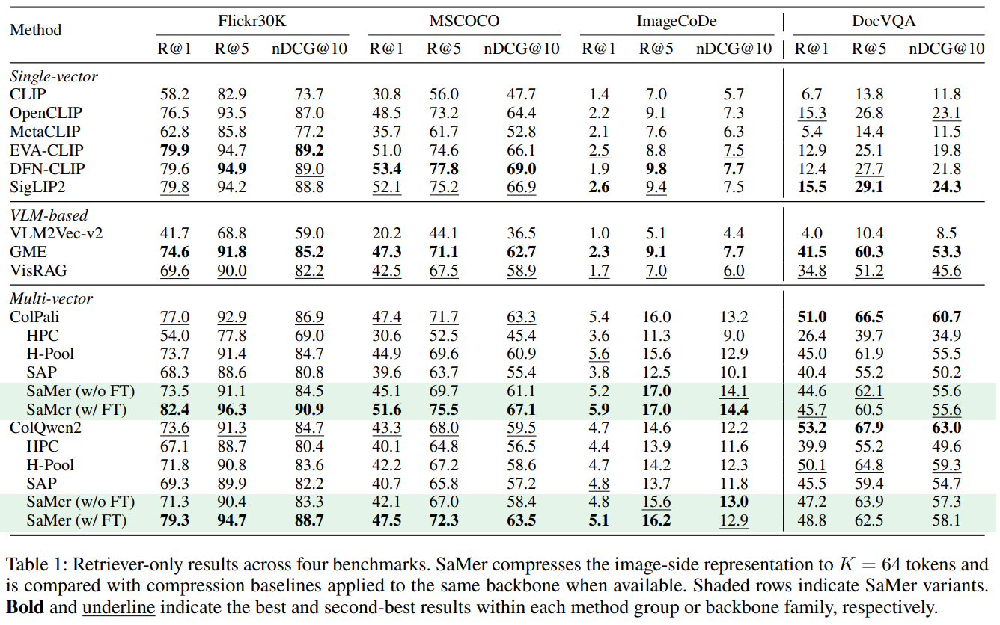

Abstract
Multi-vector vision-language retrieval preserves fine-grained visual evidence through maximum-similarity late interaction, but dense image-side tokens make storage and scoring expensive. Existing token compression methods reduce this cost, yet they can remove or collapse object- and region-level evidence that future query tokens may need to select. We propose SaMer (Semantic-aware Merging), an object-aware token merging framework that compresses image-side post-projector tokens into \(K\) representative centroids while preserving the original late-interaction interface. SaMer uses object annotations only during training as a merge prior to discourage cross-instance mixing, requires no ground-truth bounding boxes or detectors at inference time, and adapts only the shared projection layer with frozen vision and language backbones. With \(K=64\), SaMer removes more than 93% of image-side tokens and reduces ColPali storage by \(16.09\times\), while improving R@1 on Flickr30K and MSCOCO. These gains arise because object-aware merging preserves query-selectable object evidence that pruning or feature-only pooling can remove or collapse. SaMer also outperforms compression baselines and shows stronger phrase-level grounding, suggesting that efficient multi-vector retrieval depends not only on reducing token count, but on preserving the evidence future query tokens need to select.
Method

SaMer compresses post-projector visual tokens with an object-aware feature-spatial merge, then scores with the original MaxSim objective — at inference it is entirely bbox-free.
SaMer (Semantic-aware Merging) keeps the original late-interaction interface intact and replaces only the image side with a small set of compressed representatives, through three coordinated steps:
Feature-Spatial Merging
Compresses the many post-projector visual tokens into a small set of representative centroids by soft assignment over a distance that combines feature similarity and 2D spatial coherence.
Object-Aware Merge Prior
During training only, object annotations add an instance-inconsistency penalty that discourages merging tokens from different object instances — no auxiliary grounding loss, no boxes at inference.
Projection-Only Adaptation
Freezes the vision encoder and language backbone and trains only the shared projection layer, so merged tokens stay compatible with MaxSim scoring.
Main Results

Analysis
Tables
Auto-advances every few seconds — use the ‹ › arrows to browse one table at a time.
Figures
Auto-advances every few seconds — use the ‹ › arrows to browse one figure at a time.
BibTeX
@article{park2026samer,
title = {Do All Visual Tokens Matter Equally? Object-Evidence Preserving Token Merging for Vision-Language Retrieval},
author = {Park, Suhyeong and Jung, Junha and Park, Jungwoo and Kang, Jaewoo},
journal = {arXiv preprint arXiv:2607.04605},
year = {2026},
url = {https://arxiv.org/abs/2607.04605}
}